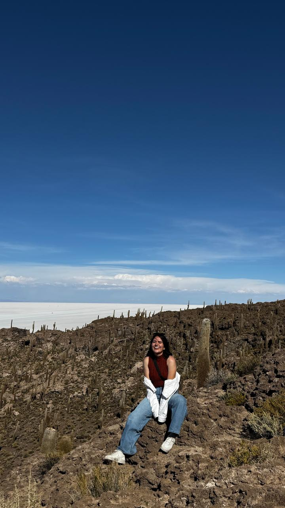
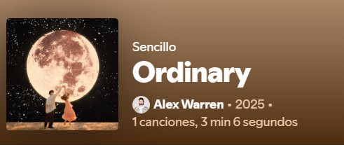
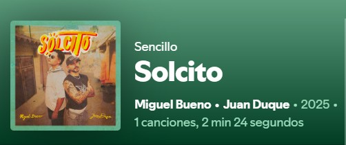
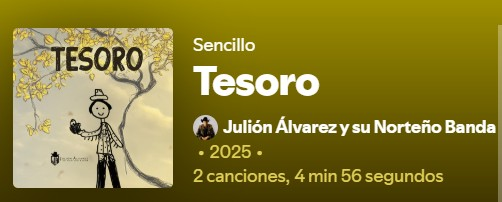
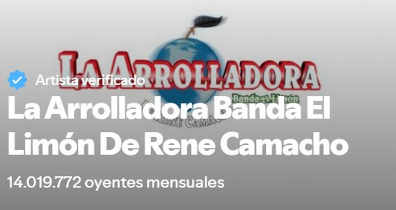

¡Hola! Soy América Yazmín Rodríguez Rodrigues, nacida en un pueblito chiquito pero con un corazón enorme:
Mezquital del Oro, Zacatecas. Crecer ahí fue una bendición: rodeada de cerros, fiestas tradicionales, comida
rica y esa vibra de comunidad donde todos se conocen (y el chisme corre rápido, pero con cariño 😅). Amo mis
raíces y todo lo que significa ser de un pueblo lleno de cultura, alegría y sabor.
A los 17 agarré mis maletas y me fui a Guadalajara para estudiar Ingeniería Industrial en la Universidad de
Guadalajara. Fueron cinco años de desvelos, risas, proyectos, aprendizajes y uno que otro colapso existencial.
Pero lo logré. En séptimo semestre viví una experiencia que me cambió la vida: me fui de intercambio a Colombia,
algo que siempre soñé. Conocí gente increíble, probé arepas y lo mas importante, aprendí a tomar café.
Soy la hermana número siete de una familia grande, unida y maravillosa. Crecer en medio de seis hermanos me
enseñó a compartir, a reír fuerte, a levantarme rápido y, sobre todo, a valorar el amor incondicional. Para mí,
la familia lo es todo: es mi base, mi impulso y mi lugar seguro.
Soy una persona todo terreno: me adapto, me lanzo sin miedo (aunque a veces con nervios) y me gusta hacer cosas
que me reten. Me encantan los viajes, las aventuras, aprender cosas nuevas y también tener mi espacio para
respirar y recargar. Soy responsable, alegre, muy curiosa y siempre estoy buscando cómo crecer, no solo
profesionalmente, sino también como persona.
Tuve la oportunidad de hacer mis prácticas profesionales en Continental Automotive, en el área de deplaneación
de Manufactura. Hice de todo un poco: desde introducció de nuevos proyectos, Optimización de procesos, hasta
corridas ya de producción en serie en líneas de producción. Fue intenso, pero súper formativo.
Y ahora… me estoy reinventando. Estoy cursando un bootcamp de Generation México para convertirme en
desarrolladora full stack junior. ¡Sí! Me estoy metiendo de lleno al mundo tech, combinando mi lado ingenieril
con la programación, porque creo que el futuro se construye mezclando saberes. ¿Lo mejor? Me la estoy pasando
genial aprendiendo algo totalmente nuevo.
En resumen: soy de pueblo, de mundo y de mil ideas. Me gusta crear, mejorar, conectar y seguir soñando en
grande. 🚀



